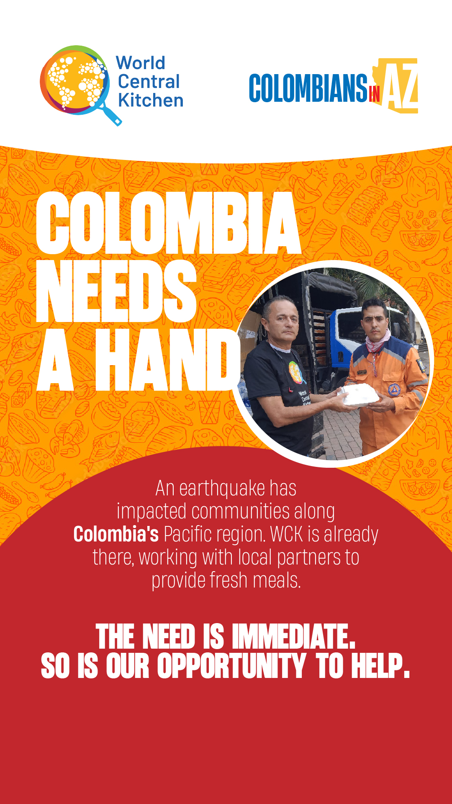

Para los colombianos en Arizona, este terremoto es profundamente personal.
El terremoto del 10 de agosto de 2026 afectó comunidades en el occidente de Colombia, incluyendo Chocó, Valle del Cauca, Risaralda, Quindío y Caldas.
Vidas detrás de las cifras
Al 6 de septiembre de 2026, el panorama completo sigue emergiendo a medida que los equipos de respuesta llegan a zonas remotas, pero los materiales de la campaña y de las reuniones muestran con claridad la magnitud de la emergencia.
Por qué Arizona es parte de la historia
Para muchos colombianos en Arizona, este desastre no está lejos. Las comunidades afectadas están conectadas con nuestras familias, amigos, lugares de origen, relaciones profesionales y recuerdos.
Esa conexión personal es la razón por la que Colombians in Arizona existe: convertir la preocupación en acción organizada. Al crear conciencia, compartir una ruta confiable para donar, conectar a las personas con información bilingüe y mantener visible la recuperación de Colombia, nuestra comunidad en Arizona puede apoyar el trabajo que se realiza en el terreno.
See The Need
La ayuda alimentaria es ayuda inmediata
En un desastre, una comida fresca puede ser práctica y profundamente humana: consuelo para una familia desplazada, alimento para alguien que espera noticias y apoyo para voluntarios que trabajan largas jornadas de recuperación.
Actividad de ayuda de WCK
World Central Kitchen ha trabajado con aliados locales para acercar ayuda alimentaria a las comunidades afectadas.
